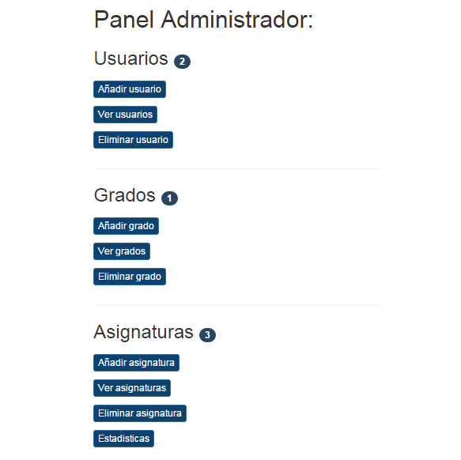
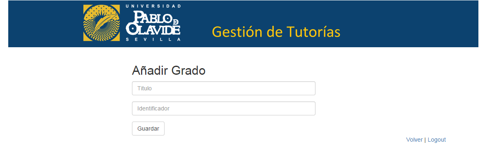
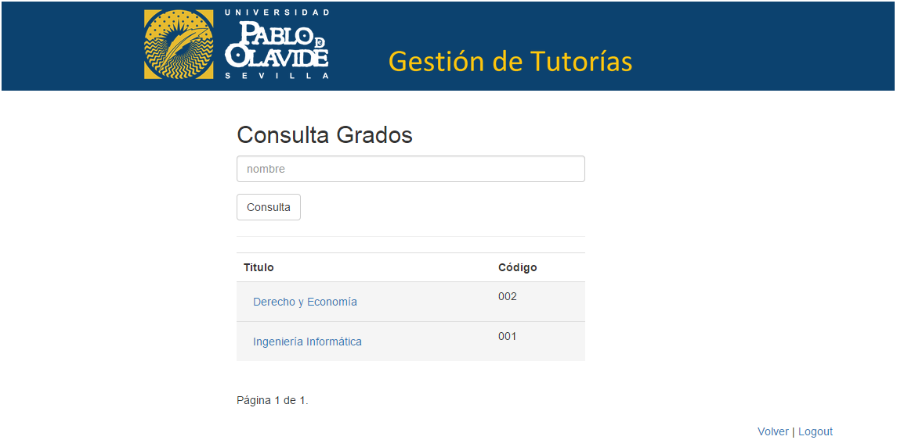
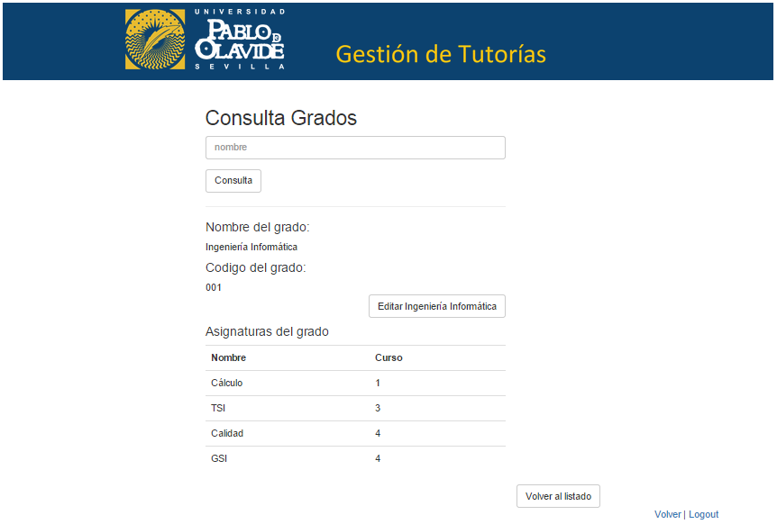
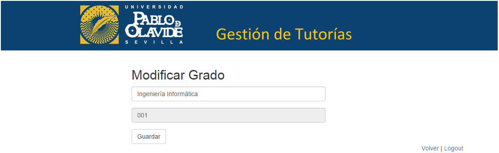
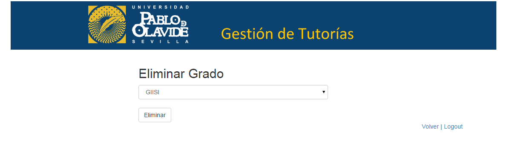

Grados¶
Siendo administrador, el usuario puede añadir, consultar, modificar y eliminar un grado del sistema.
- Añadir grado
- Consultar grado
- Modificar grado
- Eliminar grado
Añadir grado¶
Para añadir un nuevo grado, el admin, desde el panel de administrador que se muestra, selecciona el botón Añadir grado.
A continuación, el admin rellena un formulario con atributos propios de un grado para añadir uno nuevo, tales como título e identificador y pulsa el botón Guardar.
Consultar grado¶
Para consultar los datos de un grado, el admin, desde el panel de administrador que se muestra, selecciona el botón Ver grados.
A continuación, le aparece la siguiente página donde puede ver una lista de todos los grados con su título y su código registrados en el sistema (lista paginada cada 10 grados). Además de un buscador, donde puede buscar el grado por su título.
Una vez que se le muestra el grado que quiere consultar, debe pinchar sobre el título de ese grado y se dirigirá a una página donde se muestra toda la información relativa a ese grado.
Modificar grado¶
Para modificar un grado, desde el panel del administrador, debe repetir los pasos para consultar un grado y una vez esté en la vista de datos de grado pulsar sobre el botón Editar <nombre de grado>.
Se muestra un formulario con los campos correspondientes al grado ya rellenos con la disponibilidad de cambiar los que se crean oportunos. Para modificar el grado se pulsa en Guardar.
Eliminar grado¶
Para eliminar un grado, el admin, desde el panel de administrador que se muestra, selecciona el botón Eliminar grado.
El sistema muestra un desplegable con todos los grados registrados del sistema para que el admin seleccione aquel que quiere eliminar y pulse sobre el botón eliminar.
